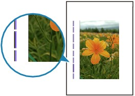

-
Check 1: Did you confirm the paper type and print quality settings?
-
Check 2: Is the size of the loaded paper correct?
The vertical lines may be printed in the margin if the size of the loaded paper is larger than that you have specified.
Set the paper size correctly according to the paper you loaded.
 Print Results Not Satisfactory
Print Results Not Satisfactory Note
Note-
The direction of the vertical line pattern may vary depending on the image data or the print setting.
-
This machine performs automatic cleaning when necessary to keep printouts clean. A small amount of ink is ejected for cleaning.
Although ink is usually ejected on the ink absorber, it may be ejected on the paper if you load paper larger than that you have specified.
-